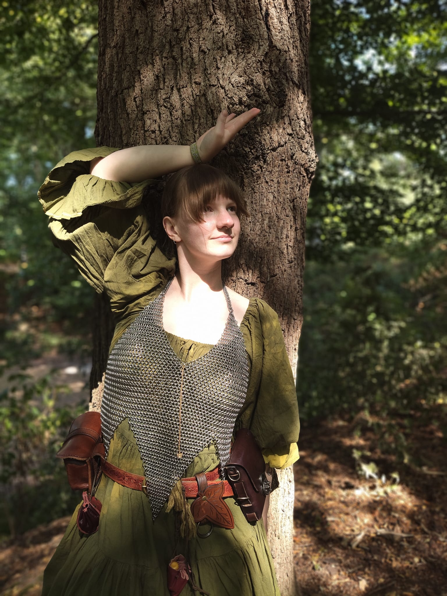

Hi! My name is Jasmijn. I'm a dutch master student, my undergraduate was also here in Leiden. I completed the bachelor Film and Literary Studies. For my bachelor I choose the film track, but we had a lot of different classes focussing not only on books or films, but on media in general.
I have a cat called Magic Tom, she is a great cat. She does all of the cat stuff, she's perfect. Furthermore, I love doing all the (creative) hobbies, so please talk to me about knitting, crochet, sewing, anything. This summer my new hobby was making chainmail!
| Prior Knowledge | I did some HTML back in my Tumblr days, long ago. I have also technically learned Python, but in reality I forgot everything. |
| Expectations | I want to have a good understanding in all the ways text is used in the digital world. I love edge cases, and weird ways to use digital media. |